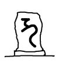

祖霊祭祀について その他
明主様御垂示 「本教の冠婚葬祭の方式」 （昭和23年）
「いずれは形式を作るが、今の所坊主や神主に頼むとよい。」
明主様御垂示 「本教の冠婚葬祭の方式」 （昭和24年11月7日）
信者の質問
「本教団の信徒にて法要、葬式、結婚式をいたしますにはいかなる方法で致せばいいでしょうか。御伺い致します。」
明主様御垂示
「今迄通りでいい。いずれは特別の方法が出来る。」
明主様御垂示 「本教の供養の方式」 （昭和24年11月13日）
信者の質問
「私の夫は輸送船の船員でありましたが、昭和十八年十一月下旬、青島に行く途中、潜水艦にて撃沈されたらしく、今以て音信がありません。
もし死んでいるなら、今年は七年忌ですので供養したいと存じますが、
この御道での供養はいかように致したら宜しいでございましょうか。」
明主様御垂示
「坊さんにやってもらえばよい。
冠婚葬祭もいずれは本教でもやる。それ迄・・・。」
明主様御垂示 「仏界はまだ残っている」 （昭和24年1月6日）
信者の質問
「毎月仏の供養と観音様の例祭をしておりますが、両方共行なったがよろしいでしょうか。
仏はもう神界に復っておりますでしょうか。」
明主様御垂示
「未だ神界ではない。仏界は残っている。
例祭と供養両方やるのは結構である。
神界というのは、今の神道などがやっている神界とはちがう。
今迄のは古神道で、古代のものを伝統としているにすぎぬ。
今度のは非常に新しい、文化的のもので、人間が想像するのと反対で、飛行機で空を飛ぶように進歩したものである。」
明主様御垂示 「冠婚葬祭と天候」 （昭和23年11月22日）
信者の質問
「冠婚葬祭の折の天候の良否はその人の御霊に関係がありましょうか。
また家屋の上棟式の場合の天候もその家屋との霊的な関係がありましょうか。」
明主様御垂示
「冠婚葬祭は天気の良い方がよい。
上棟式は寧ろ降った方がよい。
私が箱根に行く時は必ず雨が降るし、熱海へ来る時は照る。
早雲寮の上棟式は猛雨であった。
箱根は火であり火は水によって強くなる。」
明主様御垂示 「先祖の宗旨が不明の場合には真言宗で良い」 （昭和26年11月1日）
信者の質問
「二代三代とキリスト教で、メシヤ教に入り先祖をどうして祀ったら良いかと言うのでございますが、
昔は仏教であったに違いないのですが、宗旨が分からないのでございます」
明主様御垂示
「宗旨が分からなかったら、真言宗にしたら良いでしょう。
と言うのはね、弘法さんは極楽だからね他の、親鸞だとか日蓮はなんだからね。」
信者の質問
「改名を真言で作ってもらってもよろしいのでしょうか」
明主様御垂示
「そうですね。なにしろ、そうしなければ居所がないですからね。
西洋はそうなってますが、東洋はそうではないからね。
そういうようにしなければならない。」
明主様御垂示 「元の宗旨はよく調べるべき」 （昭和26年11月1日）
信者の質問
「一度変っており、元の宗教が分からないというときにはいかがいたしましたらよろしいでしょうか」
明主様御垂示
「そんなことはないがね。いつごろですか。」
信者の発言
「親の代からということでございます。当人たちはなにも関心持っておりません。名前もわかりません」
明主様御垂示
「親戚は。」
信者の質問
「やはり、良く調べてやるのでございましょうか」
明主様御垂示
「そうです。真宗なら真宗の霊界があるし、日蓮宗なら日蓮宗の霊界がある。食い違うとおもしろくない。」
明主様御垂示 「病人の宗旨を把握せよ」 （昭和26年9月18日）
信者の質問
「私の家は長野県埴科（ハニシナ）郡坂城（サカキ）町でございます。
村でも芝切りと言われるくらいに古い家で、八幡様を氏神として代々祀られておりましたが、
今から四代前のおじい様が、道楽のために田畑を売り、ついに氏神様まで人手に渡してしまいました。
それから昭和二十三年二月四日に祖母が半身中風となり、今だに治らないのに、また母が十月十五日ごろより腹膜となり、二、三の医師に見てもらっておりますうちに、
大光明如来様の御神徳を知り、八月一日よりおすがりいたして、私は入信させていただきました。
御屏風観音様も御奉斎させていただきました。
お蔭をもちまして、毎日少なくないながらも排便はありますが、お腹が膨くれて少しも変わりなく苦しんでおります。
また咽喉元に指先大くらいの固結ができ、どうしても流動物以外は通りません。
霊的になにかございましょうか。御教示お願い申し上げます。」
明主様御垂示
「半身中風というのはない。中風は半身なんですからね。
これも霊的ですね。
氏神様を人手に渡したのは悪いですね。
氏神というのは、ここの先祖・・・祖先ですからね。
氏神と産土は違いますね。
先に書いたが、氏神というのは大祖先ですからね。
ですから、産土に昇格したんだから縁が切れてますからね。
良くお詫びして、御先祖様を・・・仏様はあるんでしょうね。ないんですか。」
信者の発言
「ございます」
明主様御垂示
「宗旨は。」
信者の発言
「分かりません」
明主様御垂示
「分かりませんじゃしょうがない。肝腎なことです。
先祖代々の位牌は。」
信者の発言
「祀ってあります」
明主様御垂示
「お詫びだね。
今まで間違っていたことを許してもらいたいと、良くお詫びをするんだ。
そうなったら、どうすることもできないから、良く光明如来様にお願いして、間違ったことを心から悔い改めたから、祖霊さんに承知するようにお願いしたいと言えば・・・良くお願いすれば、それでいいです。
光明如来様は。」
信者の発言
「まだでございます」
明主様御垂示
「さっそくお祀りして、そうすれば良くなります。」
信者の質問
「その場合、祖先の位牌にお詫びするのでございましょうか。」
明主様御垂示
「そうです。」
信者の質問
「氏神様の方には」
明主様御垂示
「氏神様の方も勿論です。」
信者の質問
「人手に渡したのですが、家が本家で、家だけがその中に入ってお祀りしております。氏神の仲間に・・・」
明主様御垂示
「それだけでは他の人と同じだ。あなたの家は祖先だから特別だ。
あなたの方で、その土地を買うようになります。手に入るようになります。そうなるべきものです。
急じゃないですが、だんだんにです。
そういうことは割合肝腎なことですよ。
氏神には月に一度ずつお参りに行けば良い。
お産日といって、月に何日とあるでしょう。
知っているでしょう。知らないですか。
毎年お祭りはありますが、お産日という日が必ずありますから、毎月お参りするんです。
ふつうの人でも、月に一度ずつお参りするのは結構です。
私も大森にいる時行ったが、産土神（うぶすながみ）はいろんなことをやってくれているんですからね。そのお礼に行くのが本当です。」
明主様御垂示 「家紋変更の可否」 （昭和25年2月26日）
信者の質問
「家紋を勝手に変更しても宜しいでしょうか。また紋所の因縁を御教示願います。」
明主様御垂示
「家紋の変更は、祖霊によっては嫌がるし、変更の要もない。」
明主様御垂示 「家の紋章」
信者の質問
「家の紋章には、何か意味がありましょうか。」
明主様御垂示
「家の紋章は家系を表わす。紋が一つならば祖先はそこから出た事となる。その他に大した意味なし。」
明主様御垂示 「帰化人の先祖祀り方」 （昭和24年7月11日）
信者の質問
「帰化した朝鮮人で妻は日本人、先祖を御祭りする場合「何々家先祖代々之霊位」として御祀りすればよいのでしょうか。」
明主様御垂示
「帰化したとすれば日本流でよい。」
明主様御垂示 「朝鮮人の死後」 （昭和24年7月1日）
信者の質問
「朝鮮人（信者）で、従来位牌を御祀り致した事が御座居ません。
今度お祀り致したいと申されますが、いかように致しましたら宜敷う御座居ましょうか。
御教えをお願い申し上げます。」
明主様御垂示
「朝鮮人が死ねば朝鮮の霊界へ行く。日本で祀って、朝鮮の霊界へ行って・・・。日本で祀ると反って厄介である。」
明主様御垂示 「戦中に中国人を惨殺した事例」 （昭和25年11月25日発行）
信者の質問
「ＨＮ（33）は八年前中国に出征中、糧秣運びに使った中国人に酒を飲ませたところ、
言うことを聞かなくなり、激昂のあまり左胸を銃剣で貫き、死体を池に蹴り込みました。
それより左肺の痛みを覚え、内地に送還され、左右肺結核および喉頭結核になり、苦しんでおりましたところ、
このお道を聞き、二十四年三月入信しましてからは声も出やすくなり働いておりましたが、最近、また左肺の痛みに苦しんでおります。
殺した中国人の姓名も、殺した日も場所も覚えていないそうですが、このような人の供養はいかがすればよいのでしょうか。お教えくださいませ。」
明主様御垂示
「供養しなくてもよろしい。
できるだけ御神書を拝読し浄霊を続ければ治るはずである。」
明主様御垂示 「不動尊の御軸が仏壇の引出しにある場合」 （昭和23年10月26日）
信者の質問
「私の亡父が朝夕御詣りしておりました不動尊の御軸が、四ケ年程仏壇の引出の中に入れてありますが、このままで良いものでしょうか。」
明主様御垂示
「このままでよい。光明如来様をお祭りしてあればよい。」
明主様御垂示 「梵字石碑の処分」 （昭和24年10月2日）
信者の質問
「今度入信させて戴いた方の庭先に、石に刻んだ左記のごとき碑がございました。いかなる意味のもので御座いましょうか。
なお取除く場合の方法と後の処置に付いて御伺い申し上げます。（石碑の様子は次の通りでございます。）」

明主様御垂示
「梵字である。取除かなくてもよい。するなら御挨拶してどかすか、お断りして処分する。」
明主様御垂示 「石塔について」 （昭和27年3月10日発行）
信者の質問
「同じ墓地に、石塔は二つありますが、遺骨を一緒に入れておりますが・・・」
明主様御垂示
「本当じゃないが、しかしどれがどうということは分らないでしょう。」
信者の質問
「分っております」
明主様御垂示
「そんなら別々にしたほうが良い。それは一緒じゃいけませんね。」
明主様御垂示 「石仏の処理」
信者の質問
「拝む必要が無くなった石の仏像の御処分はいかが致したらよろしいので御座いましょうか。」
明主様御垂示
「記念にとっておいたらいい。博物館が保存するように、その時代時代の美術を表わしたものであるから、大切にとっておいたらいいだろう。」
明主様御垂示 「治病遅速の原因と祖霊」 （昭和24年6月25日）
信者の質問
「霊主体従の法則により霊体より肉体へ移って病気の治癒に遅速があるのは、その人の毒素の多寡によるものでありましょうか、
または浄霊する人の霊力の強弱によるものでありましょうか。」
明主様御垂示
「毒素の多寡、浄霊の霊力の強弱・・・いろいろある。
祖先の関係もある。祖先で救われたのがあると、霊界で力があるから、良い教導師を引っ張って来れる。
堕ちている（地獄で苦しんでいる）祖先はそういう事が出来ない。
それで良い教師を得ず、救われぬ事がある。
祖先の贖罪の場合、子供を身代りにして犠牲にする場合がある。
症状は吐く。その他種々の原因がある。」
明主様御垂示 「一地方に流行の奇病」 （昭和24年6月25日）
信者の質問
「愛媛県下上浮穴地方山間部に甲状腺腫病が集団流行し、現地へ医学調査団が参り原因にメスを入れても一向不明、遂にサジを投げたという状況です。
同病の原因また同地方のみに流行の訳、浄霊法を御教示下さい。」
明主様御垂示
「バセドー氏病であるが、霊的であろう。
何かの霊が目的がある。祀ってもらいたいなどで、眷族に命令してやらすのである。
それが原因である。病気の状態で分る。」
明主様御垂示 「祖霊の中には猫を嫌う者もいる」
信者の質問
「私の家では何回猫をもらっても育たぬ訳。」
明主様御垂示
「猫は飼わぬ方がよい。祖霊の中で嫌うのがいる。無理に飼うと碌な事はない。」
明主様御垂示 「飼猫育たず」 （昭和24年1月19日）
信者の質問
「私の家では猫が好きで、いつも猫を拾って育てるのですが、半年位経ちますと死んだり、行方不明になります。いかなるわけでございましょうか。」
明主様御垂示
「元、畜生道へ堕ち、猫の場合があった。
面白くない所があるか、猫を可愛がるに対し嫉妬する霊がある。
また猫の嫌いな霊があって追出すかである。猫に反対の霊である。
そういう霊的に複雑した事情があろう。」
明主様御垂示 「三代目に男の子ができない家系」 （昭和27年6月1日）
信者の質問
「本家のほうは三代目になると男の子ができません。
二代は男、三代目に女となっております。
分家のほうは男の子がございます。原因がございますので・・・」
明主様御垂示
「それはありますよ。それは祖先が何か事情があって、そういう風にするんですね。
そうすると霊界に行って、霊界で祖先が下の子孫に向って命令するんだ。
こうせよ、と。それも祖霊がそういうことになったのは事情があったんです。
先祖にね。そうしたほうがいい。そうしなければならない、と何か事情があったんですね。
それが男ばかり女ばかりじゃ駄目だが、そういう具合に両方いい具合にいくんだからいいでしょう。
明主様御垂示 「代々客死、系図見ると死ぬ」 （昭和23年11月22日）
信者の質問
「私の知人の家に、八幡太郎義家の系図の伝った宅がありますが、この家の人は代々家で死ぬ人がありません。
またこの系図を開いて見た人はすぐ不意の死をするとの事ですが、なぜですか。
またその悪因縁をどうすれば切れますか。御教示下さい。」
明主様御垂示
「先祖で頑固な者がいて、自分の先代が戦場で死んだので、自分も外で死ななければならぬと思い、死んでからも、頑固のためにそういう風にする。
また、系図を見られるのを嫌がるためである。」
明主様御垂示 「浄霊と慰霊」
信者の質問
「御浄霊と慰霊について御伺い申上げます。」
明主様御垂示
「慰霊は供養、浄霊は浄める。聖者の洗礼と同じ事である。光の放射により浄めるのである。」
明主様御垂示 「霊障と病気発生箇所」 （昭和24年3月4日）
信者の質問
「四年前に右足のくるぶしが急に腫れまして、その時三ケ所手術致しましたが結果がよくありません。
去年の二月頃御浄霊を戴き、お守様も戴きましたが痛みはとれません。
夫の父親の石碑をまだ建てていませんが、関係が御座いますでしょうか。」
明主様御垂示
「夫とか目上の人の関係なら頭に故障がある。
足なら部下とか手下である。
しかし、これは薬毒である。訳なくとれる。手術の薬は深部まで滲み込む。」
明主様御垂示 「死者に天蓋、葬と人徳」 （昭和24年3月11日）
信者の質問
「遠州熊切村で、昔から死人が出来た時「カシャ」が降りて来て死人を持って行くといわれておりますが、
「カシャ」とはどんなもので御座いましょうか。
また、霊柩車に天蓋として龍の形の物を必ず付けて行きます。
天蓋は「カシャ」が降りて来た時、それを死人にかぶせれば「カシャ」は去って終うと言う事で御座いますが、天蓋は何か霊的に関係が御座いましょうか。
御伺い申し上げます。」
明主様御垂示
「「カシャ」は火の車の事であろう。
天蓋は、寺の天井に吊してあるが、極楽の形である。
龍神などがついてるのは、龍神の偉力で、地獄よりいくらか良い所へ行く訳であろう。
その人の徳により天蓋を被せられる事となる。大した意味はない。
死んで立派な葬式を受けるなどはその人の徳による。
世の中のために尽す徳により立派な待遇を受ける事になる。」
明主様御垂示 「位牌を縛ったのは邪神」 （昭和23年7月21日）
「妙光は龍神と稲荷である。
位牌を縛ったのはいけない。邪神である。
少し経ったら（百日位）元の御座へ帰るよう言って処分する。
足や腕など祀ってるのがある。」
明主様御垂示 「死者に鞭打つなかれ」
悪口を言われると霊界で苦しい
「死者を悪くいうのは非常にいけない。
ある三十七、八歳の女を悪く言った。
その時、奥様が腹痛み、いきなり「駄目だ」と言われた。
死にもしないのにおかしい。
「誰か」というと口が利けぬ。首を振る事によって返事させた。
悪くいうと霊界で苦しいから、それを言わないでくれと、それを頼みに来た。
悪くいうと向上の妨げとなる。特に大先生に言われると響きが大きい。
なるべく言わん方がよい。」
明主様御教え 「広吉の霊」より （昭和18年10月23日発行）
死ぬのも悪くない
「（一部のみ引用） それから二、三日経って、その頃私は実業に従事していたので、事務所で仕事をしていると何か私に憑依したものがあるような気がする。
しかも非常に嬉しくて涙が零（こぼ）れるような感じなので、直ちに人の居ない部屋に行き、憑依霊を査べたのである。
それは広吉の霊であった。
彼いわく「私は今日御礼に参りました。私がどんなに嬉しいかという事はよくお判りでしょう。」と言って又別にお願があるというのである。
それは「今度祀って戴いてから実に結構で、いつまでもこのままの境遇で居たいのです。
私は娑婆はもう懲々（こりごり）です。
娑婆では稼がなければ食う事が出来ず、苦しみばかり多くて、再び娑婆へ生れ出たくはないのですから、
どうか神様ヘ、再び娑婆の人間に生れ更らないように御願をお取次していただきたいのであります。」と言い厚く礼をのべてかえったのである。
これらによって察すると、死ぬ事は満更悪い事ではなく、死を恐れるよりも楽しむ方が本当かも知れない・・・と私はその時思ったのである。
ここで注意すべき事は、霊界においては非常に順序や規律が正しく、助けた霊は必ず礼に来るものである。
その場合人の手を通して物質で礼に来る事もある。
よく思いもかけない所から物を貰うような事があるが、それらも霊が何らかの意味で、人を使って礼に来さすという事も、実はあるのである。」 （「明日の医術 第３編」より）
明主様御垂示 「明主様信仰で救われた者は新時代の祖先になる」
信者の質問
「私が観音教を人に勧める場合に次のような事を言われました。
貴殿は貴家を挙げて観音教を信奉してもあなたの子の代、または孫の代に放任し、または無関心の場合を保証出来ない。
故に無関心無信奉が祟って観音教の御軸、御額が却って末代において障害とならないかと言います。これはどうした事でしょう。
それで教修を断り勝ちです。
正しい神様に断じてあるべきでないのが本教団だと言っても聞き入れません。」
明主様御垂示
「こういう事を言ったらキリがない。教団で救われた人は祖先になる。これから新時代の祖先になる。
そして祖先が徳を施すから、子孫は皆良い訳である。
悪い子孫が出るのは
祖先の徳が足りない訳であるともいえる。
物を悪くとればどんなにも悪くとれる。
悪くとる人は心にどっか違った所がある。
こういう人は、無理に奨めず、時節を待つ。
まず何より現在を救われたい、世の中を良くしたい、それだけの考えでよい。
取越し苦労や過越し苦労はいけない。
観音様にお任せするとうまくいく。
不安に襲われるのは霊層界の下にいるからで、段々救われると何となく不安はなくなる。」